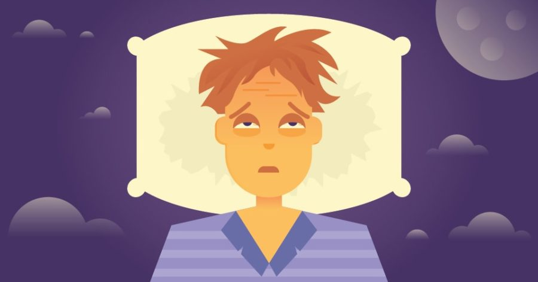

The Impact Sleep Does to Your Health
- If the lack of sleep continues, it can significantly impact your overall health:
- You’re likely to be prone to serious medical conditions (e.g. obesity, heart disease, high blood pressure and diabetes.
- Numerous studies show that insufficient sleep increases a person’s risk of developing serious medical conditions.
- Obesity:
- People who sleeps less than six hours per night on a regular basis are much more likely to have excess body weight, while people who sleeps an average of eight hours per night have the lowest relative body fat.
- Babies who are “short sleepers” are much more likely to develop obesity later in childhood than those who sleep the recommended amount.
- Diabetes:
- People who reported sleeping fewer than five hours per night have a greatly increased risk of having or developing type 2 diabetes.
- Improved sleep can positively influence blood sugar control and reduce the effects of type 2 diabetes.
- Lack of sufficient sleep over time will lead to a shortened lifespan:
- Scientists have begun to identify the connections between insufficient sleep with diseases (getting high-quality sleep is as important to health as nutrition and exercise).
- Cardiovascular disease and hypertension: (hypertension: abnormally high blood pressure)
- Even modestly reduced sleep can lead to an increased risk of coronary artery calcification, a predictor of future myocardial infarction (heart attack) and death due to heart disease.
- Sleep loss can be caused by obstructive sleep apnea and an increased risk of cardiovascular diseases (hypertension, stroke, coronary heart disease, and irregular heartbeat).
- Immune function:
- Sleep deprivation will lead to increased levels of many inflammatory mediators and decrease the ability to resist infection.
- Common Cold:
- People who averaged less than seven hours of sleep a night were three times more likely to develop cold symptoms than those who get eight or more hours of sleep.
